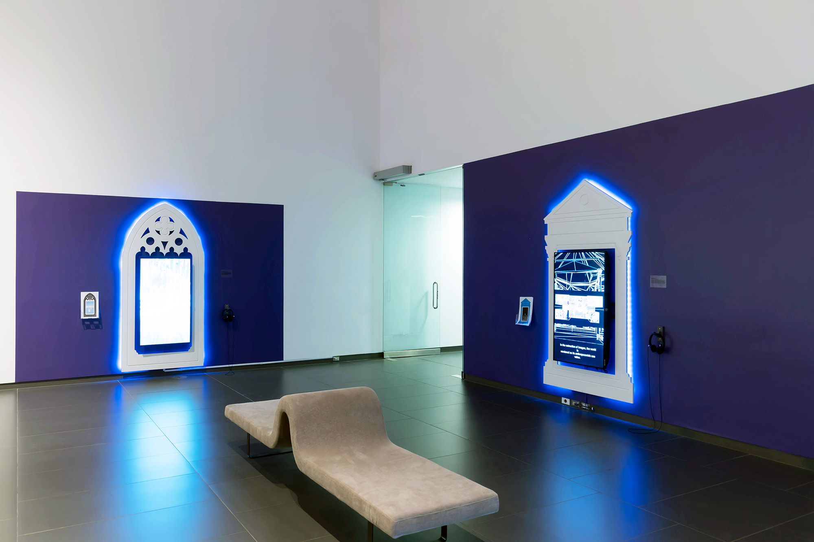
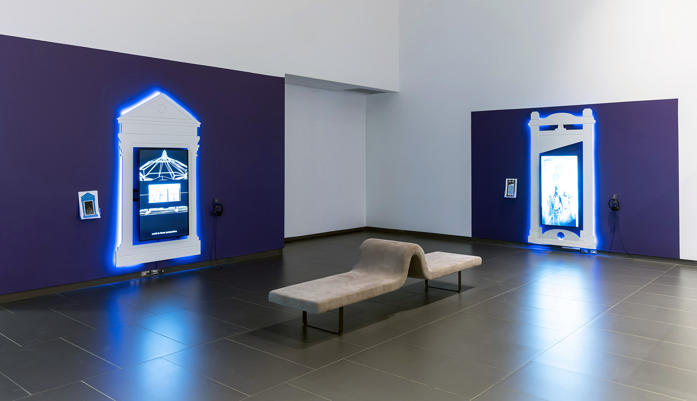
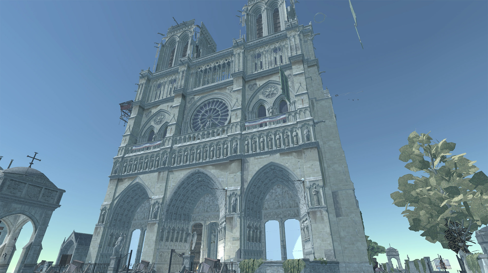
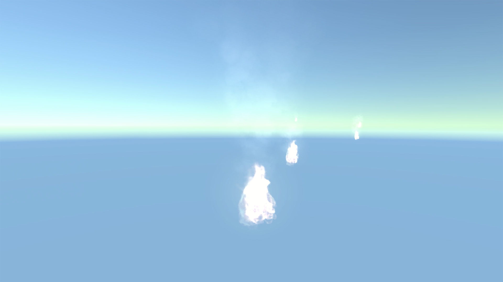
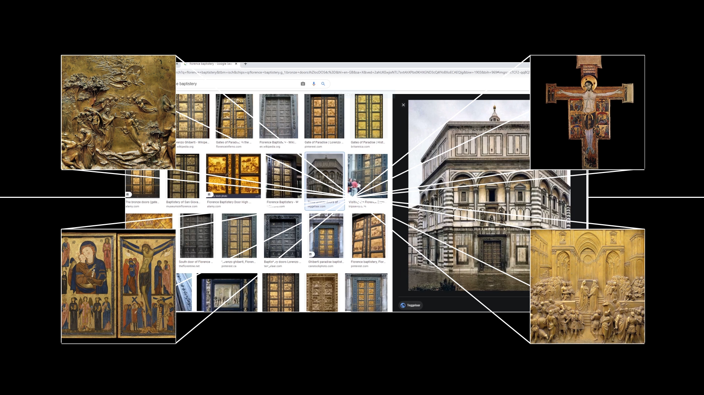
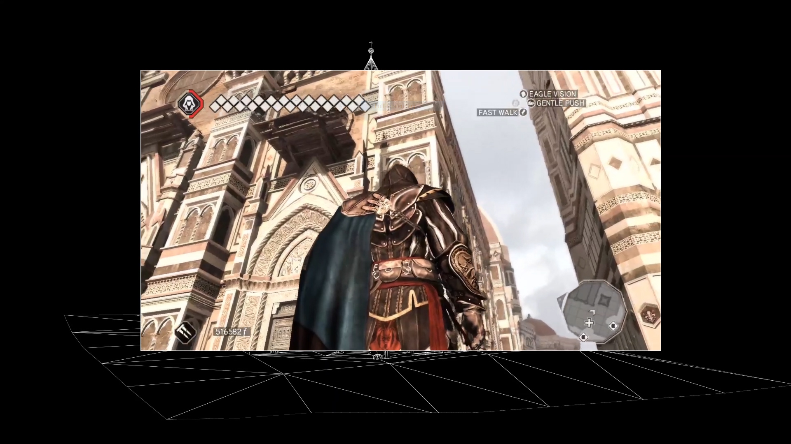
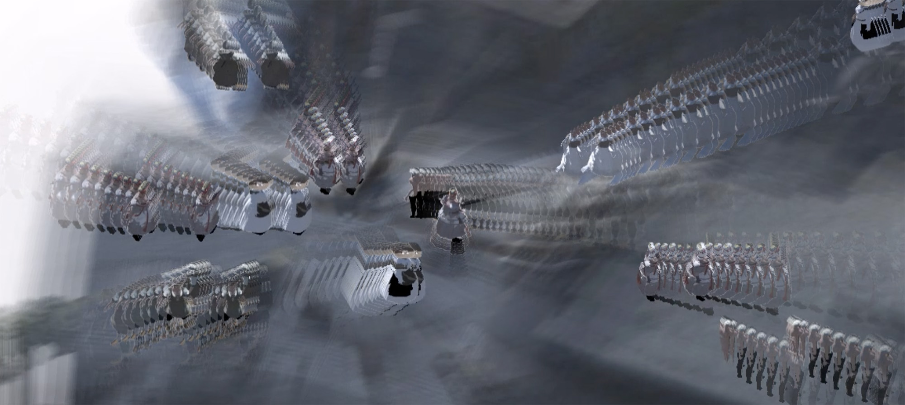
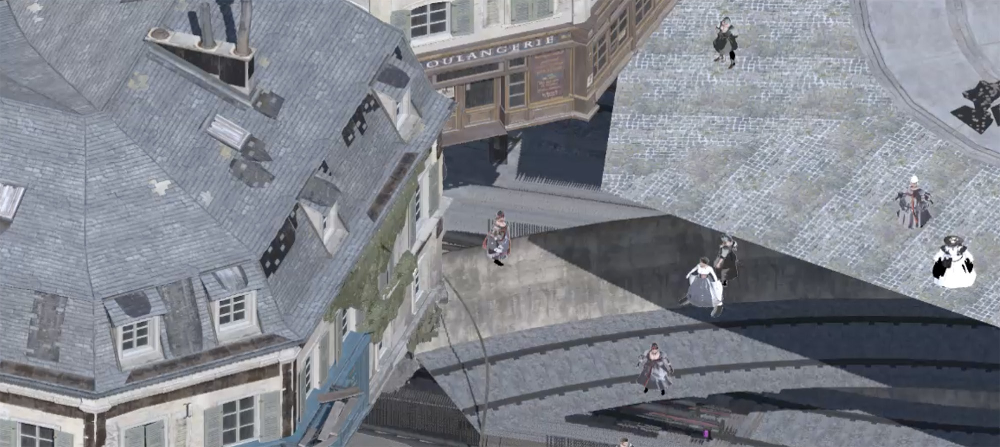

Assassin's Creed Art History

Three video game essays use the Assassin's Creed series to examine how representations of the past provide insight into contemporary social tensions. The narrative of technological progress — the assumption that new technologies mean greater societal advancement — encourages the belief that we are living in the best possible world. The Assassin's Creed Art History series considers how representations of history through technology can limit our ability to learn from the past and reimagine the future.
The series has been exhibited as single-channel machinima with take-home risograph essays in English and French at Video Games? Art and Technology, Art Gallery of Grande Prairie (2022); OPEN SYSTEMS 1: OPEN WORLDS, Singapore Art Museum (2023); and the Milan Machinima Festival (2024), where Crowd Control received the Critics' Choice Award.

Gameworkers & Guildworkers
Who had more industry protections — video game workers or medieval builders almost a thousand years ago? This interactive video game essay guides audiences through a retelling of labour history that reveals the poor protections of today's video game industry. Using the site of Paris' Notre Dame cathedral and the stories of the builders of both the original cathedral and its digital facsimile, Gameworkers and Guildworkers explores how worker-led organizations protected workers in the past and their potential for the future.


Blindspot
What prevented the birthplace of linear perspective from being rendered in 3D? In Assassin's Creed II (2009), the digital city of Florence was missing one of its most iconic buildings. The omission of the Florentine Baptistery becomes an ironic revisioning of history through Blindspot. The walkthrough draws a connection between the site's importance in the development of Western scientific technology and the gradual restructuring of political power through such technological representation that continues to this day.


Crowd Control
How will artificial intelligence shape the peasant revolts of the future? Looking at the ways that crowd simulation technology has intersected with a growing surveillance industry, this game focuses on the representation of the French Revolutionary mob in Assassin's Creed Unity (2014). Reflecting on depictions of crowds in art history up to the contemporary crowd simulations of video games, Crowd Control examines how these technologies foreclose upon the possibility of collective action within the real world.

